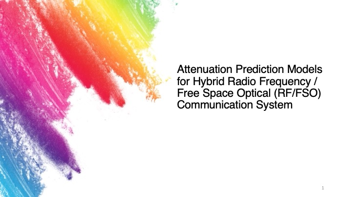
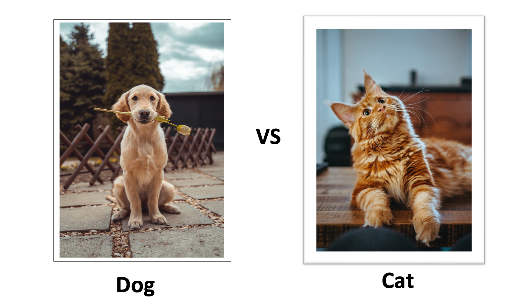

I am a Master of Data Science graduate, currently working as a Research Assistant at Adelaide University.
With a strong foundation in machine learning and statistics, I am proficient in Python, Excel, SQL, and R. Throughout my studies and internship, I have gained hands-on experience in feature engineering, model optimisation, and developing machine learning solutions for complex problems.
I am actively seeking a job in data science, applied machine learning or data analysis, where I can apply my analytical skills and technical knowledge to drive data-driven projects. My passion lies in leveraging innovative solutions to address real-world challenges in the field of data science and analytics.
As a collaborative team player and a quick learner with strong communication skills, I am eager to contribute to impactful projects and continue growing as a data professional. I look forward to connecting with industry professionals and exploring opportunities to apply my expertise in a dynamic work environment.


This section includes a series of Machine Learning projects I have developed to explore diverse real-world applications, including:
- American Sign Language Image Classification – developed a model to recognise hand gestures from image data.
- Breast Cancer Classification – applied classification algorithms to predict tumour malignancy.
- Seoul Bike Rental Prediction – built regression models to forecast bike rental demand based on weather and seasonal data.
Housing is often considered one of the key determinants of people's well-being (Rolfe
et al. 2020). For most families, purchasing a house is their largest single financial
investment (Tsatsaronis & Zhu 2004). The driving factors behind house prices have
been the focus of research. Beyond property attributes and location, what other
factors may influence house prices? To answer this question, this study focuses on
house price data for Tokyo between 2014 and 2023. Several machine learning models
(Linear Regression (LR), Random Forest (RF) and XGBoost) were developed to predict
house prices and the SHapley Additive exPlanations (SHAP) was applied to identify the
key economic and demographic factors. The optimised XGBoost was selected as the
best model with the root mean squared error (RMSE) of 0.2965, the mean absolute
error (MAE) of 0.1978 and the coefficient of determination (R²) of 0.8512. Immigration
and GDPPerCapita were identified as the most important demographic and economic
factors affecting house prices in Tokyo between 2014 and 2023.

With the rapid development of 6G and artificial intelligence,
existing Radio Frequency (RF) and Free Space Optical (FSO)
communications are no longer able to meet the growing demand.
A hybrid RF/FSO communication system offers improved data
rates and link availability. However, the hybrid communication
signals are susceptible to weather conditions. This study investi-
gates the stability of hybrid RF/FSO signals in different weather
conditions and provides guidance for the deployment of this hy-
brid system. The generic random forest algorithm for all weather
conditions was used to develop three methods for predicting RF
and FSO attenuation: an independent method (Method 1) and
two joint methods (Method 2 and Method 3). The Pearson Cor-
relation Coefficient (PCC) and Normalised Mutual Information
(NMI) test results suggest that all three methods preserve simi-
lar correlation levels to those observed in the measured RF and
FSO attenuation. The difference between measured and predicted
PCCs was generally small across all methods, with the smallest
being 0.000165 and the largest reaching 0.093. Similarly, the NMI
differences ranged from 0.002 to 0.032. Method 1 was identified as
the best overall method for predicting RF and FSO attenuation as
it achieved the highest test performance with Root Mean Squared
Error (RMSE) values of 0.48 dB and 0.81 dB and R-squared (R²)
values of 0.98 and 0.96 respectively. As the RFLFSODataFull
dataset used in this study contains many highly correlated fea-
tures, feature selection was applied to identify the most important
features, prevent overfitting and improve model performance.

Diabetes is a metabolic disease that has seen a significant increase in prevalence around the world since the 1980s. Without timely detection and treatment, patients are at risk of serious complications. Recently, the rise of machine learning and deep learning has led to their increasing application in disease prediction. Various studies have used models such as Support Vector Machines, and Random Forest with varying accuracy.
This study aims to improve the accuracy of diabetes diagnosis in women by developing a predictive model based on the perceptron algorithm. To this end, the Pima Indians Diabetes Database was selected as the dataset. Following a traditional machine learning workflow, a baseline single-layer perceptron model was built in Python and optimised through hyperparameter tuning. Using accuracy, precision, recall and F1 score as performance metrics, the optimised model achieved a high accuracy of 74.68%. This result demonstrates the model's potential to improve the accuracy of diabetes diagnosis.

In recent years, with the high-speed development of fields such as autonomous driving and product quality recognition, the demand for image classification accuracy has increased.
The development of deep learning has made this goal achievable. This study explores three small to medium-sized CNN architectures: ResNet-18, SqueezeNet and MobileNet. Image classification models were trained from scratch using the CIFAR-10 dataset. Techniques like Data Augmentation, Normalisation, Regularisation and Early Stopping were applied to improve the classification performance of the model. The optimised ResNet-18 model achieved a high test accuracy of 84.52% after hyperparameter optimisation.

Stocks have become a popular investment tool because of their high returns. However, the high volatility of the stock market leads to significant uncertainty in investment returns, with both high profits and high losses. To ensure positive investment returns, investors seek methods to predict future stock prices accurately. Unfortunately, predicting future stock prices is very challenging due to the complexity of financial markets. The emergence of the recurrent neural network (RNN), a deep learning model specifically designed for sequence data, has made this goal more achievable. This study employed the RNN architecture to develop a low-error model for predicting Google stock prices. The model aims to capture short-term market trends and provide investors with valuable insights for buying and selling decisions by analysing the past 20 days of data to predict the stock price on the 21st day. Techniques such as normalisation, regularisation and early stopping were applied to improve the model's predictive performance. The optimised gated recurrent unit (GRU) model achieved a low test RMSE of 2.24 after hyperparameter optimisation.

Data Exploration of Covid-19 Dataset in SQL Server.

Data Visualisation of Covid-19 Data in Tableau.